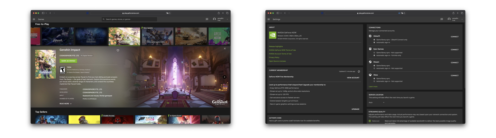
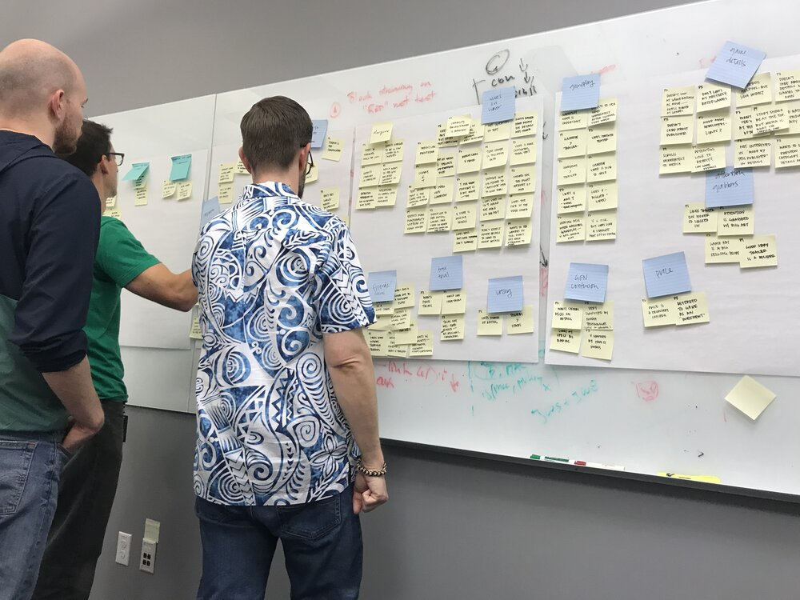
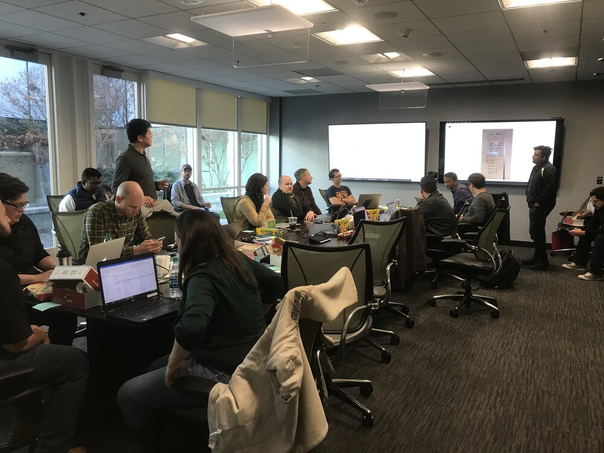
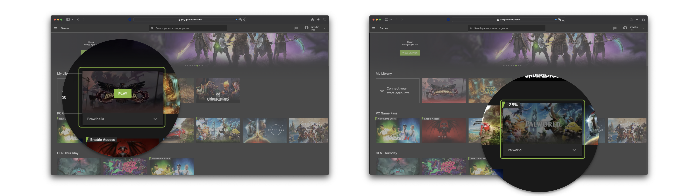
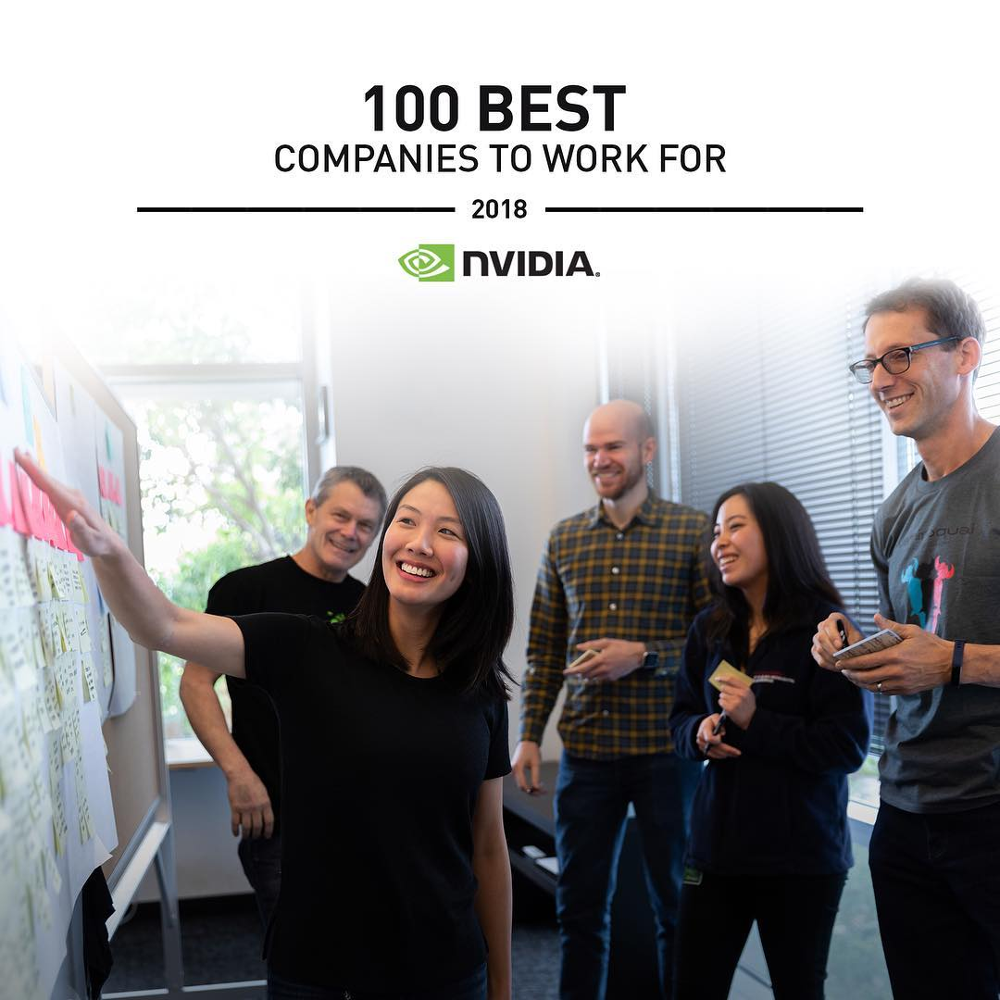

I was lucky enough to spend a semester as an intern at NVIDIA, predominantly working on GeForce NOW, a new cloud gaming platform in beta. I was the team's first intern trusted to work on a consumer-facing product.
I also assisted with the design system, cross-functional workshops, and user research.

I contributed designs for the card component, as well as the settings page, focusing on the concept of easier browsing (snacking), and easier access and improved understanding to important controls.
Research methods
I wrote the research protocol and led a team of five designers in external user interviews to understand user goals and mental models.

I also took the findings and led the design team in an affinity diagram exercise that helped inform opportunities and our roadmap, focusing on user goals.

I also helped coordinate and structure a crossfunctional workshop with other leads and stakeholders to align the work and set priorities.
Results
Using the results, we restructured some of the work around our architecture and our card component.

We updated the hover states of game cards to reflect differences in ownership, which affected the user's ability to play the game.

We also created card details based on user expectations and feedback.
I learned so much about building and shipping products during my time at NVIDIA, and am grateful to have had the chance to work on an exciting project that was still in beta. I can't wait to see what the team continues to come out with!
Bonus
NVIDIA PR stumbled upon my affinity diagram in the office and did a photoshoot with my team and I that they still use in promotional materials. I'm second from the right!
